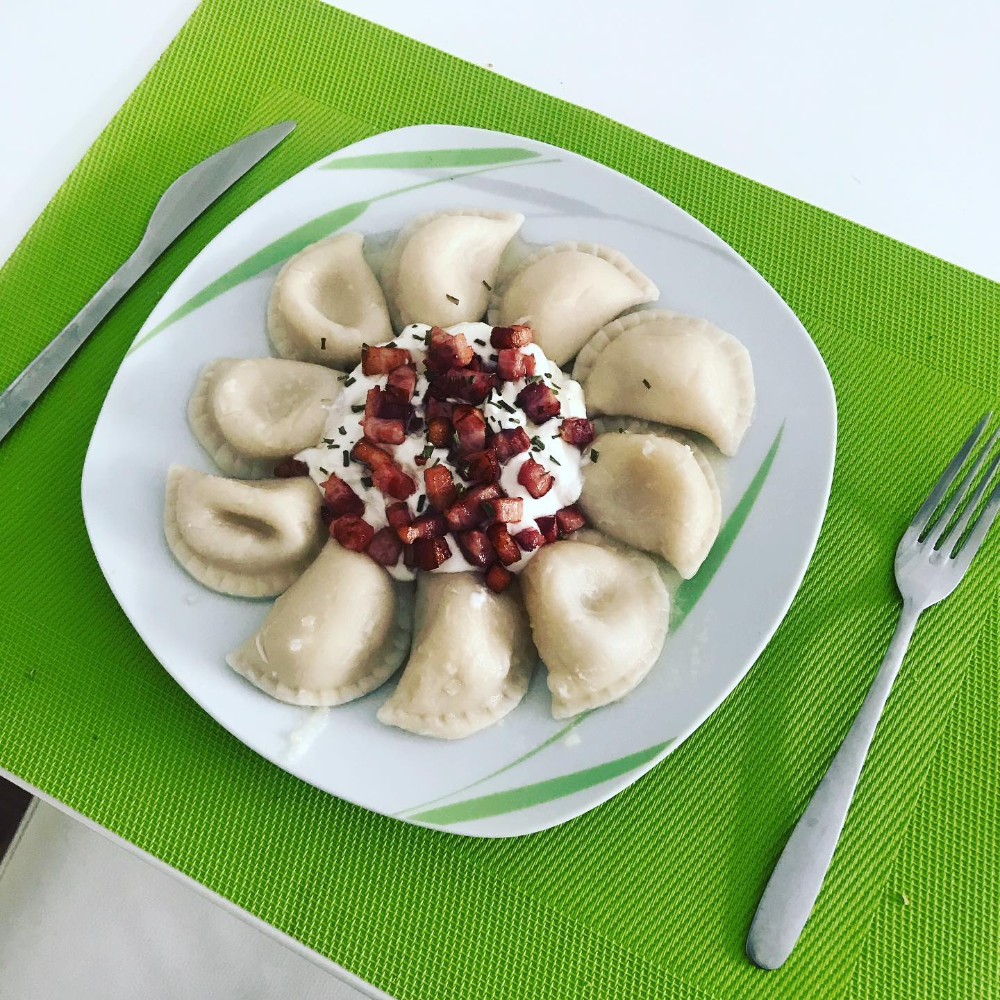

Bryndzové pirohy podľa @ivo_nka87 — Normy Jedál
A opäť chutne bryndzove pirohy so slaninkou 🤤💁🏼♀️#mnamdpc
#pirohy #bryndza #bryndzovepirohy #oškvarky #slovenskejedlo 🇸🇰 #yummy #yummyfood #foodporn #dnesjem #chutnejedlo #milujemjedlo ❤️ #instafood #foodlover #dobruchut #mnam #mnamka #lovecooking #cooking #yummyfood #foodstyling #homecooking #foodphotography #milujemjedlo #foodporn #food #obed